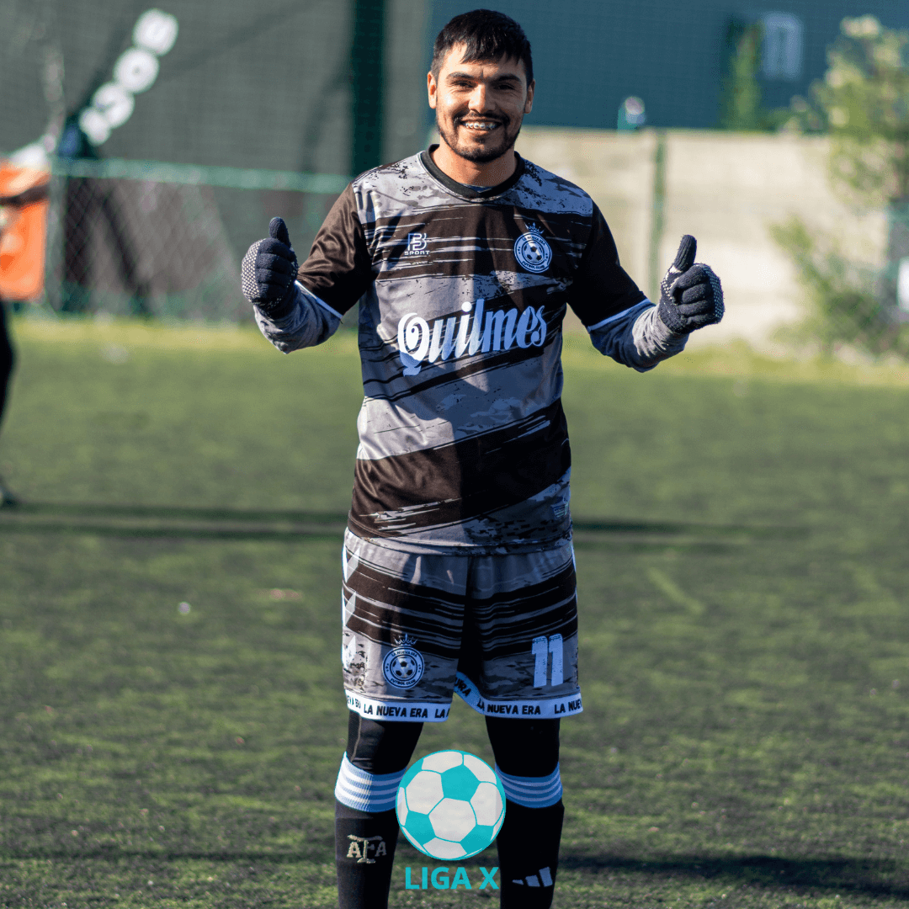
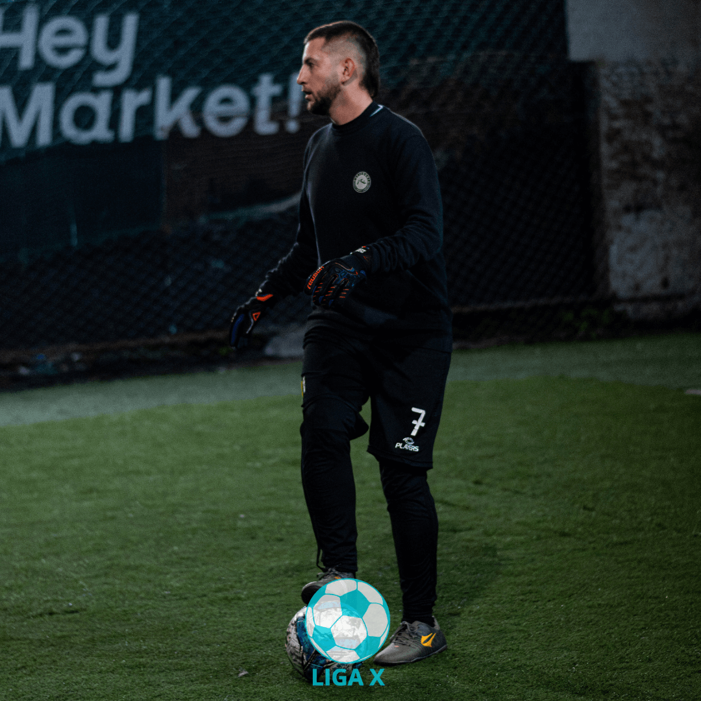
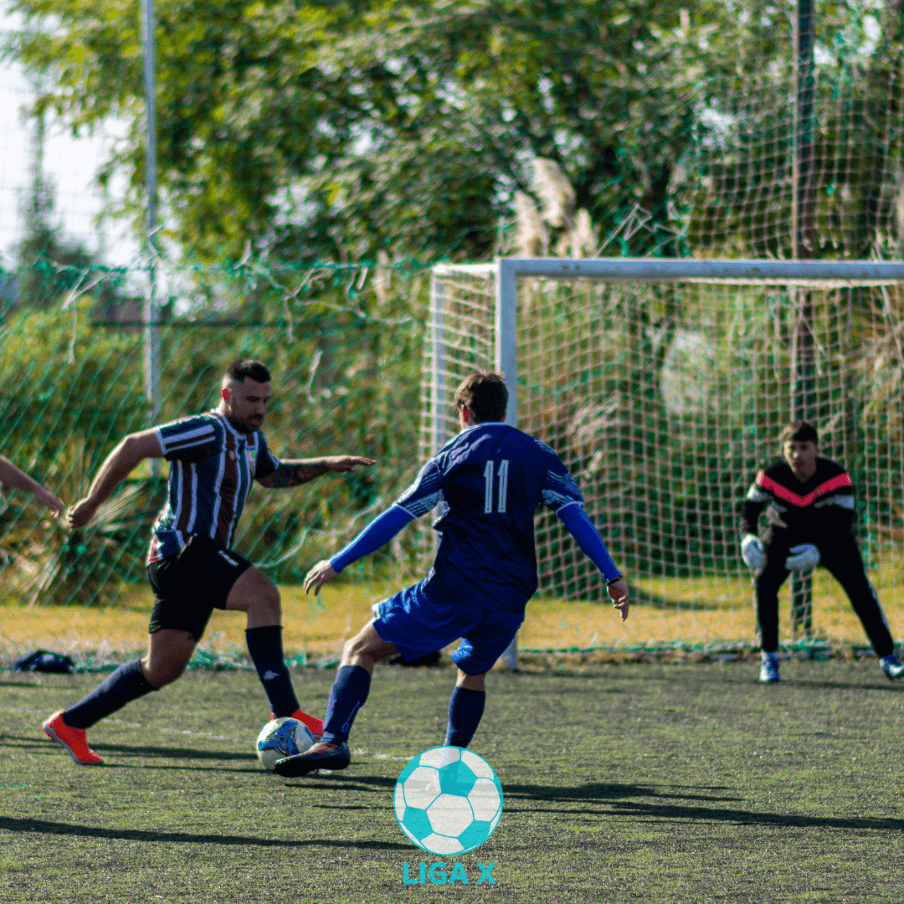
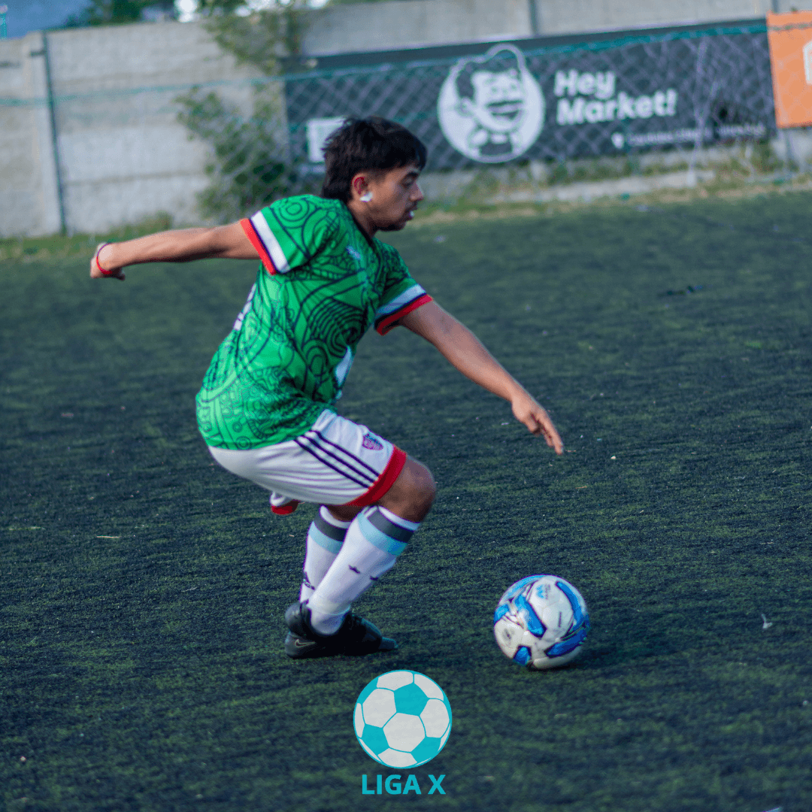

Liga X
Torneo de los Sábados por la Tarde
Ideal para disfrutar del fin de semana, el torneo de los sábados por la tarde ofrece partidos llenos de energía y emoción. Es un momento en que amigos y familias se reúnen para apoyar a sus equipos favoritos y disfrutar de la camaradería que solo el fútbol puede ofrecer.
Torneo de los Lunes por la Noche
Diseñado para aquellos que buscan un inicio de semana lleno de acción, nuestro torneo de los lunes por la noche reúne a equipos que compiten bajo las estrellas. Es el lugar perfecto para liberar el estrés del primer día de la semana y conectarse con otros apasionados del fútbol.
Jugador Revelación del Torneo
La joven promesa Pablo Gómez se ha convertido en el jugador revelación del torneo. Con solo 18 años, Gómez ha demostrado un talento excepcional en el medio campo, asistiendo y anotando en momentos cruciales para su equipo, las Estrellas Rojas. Los entrenadores y aficionados están impresionados por su visión de juego y su capacidad para cambiar el ritmo del partido.
El Regreso Triunfal del Capitán
Después de una lesión que lo mantuvo fuera de los terrenos de juego por varios meses, el capitán de los Dragones, Roberto Martínez, hizo un regreso triunfal. Martínez lideró a su equipo a una contundente victoria de 3-0 contra los Guerreros, anotando dos goles y asistiendo en otro. Su regreso ha levantado el ánimo del equipo y de los seguidores, quienes esperan que esta sea una señal de más éxitos por venir.
